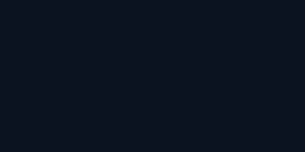
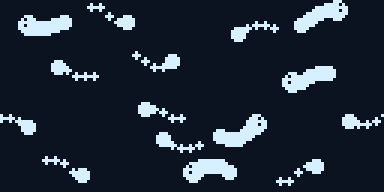
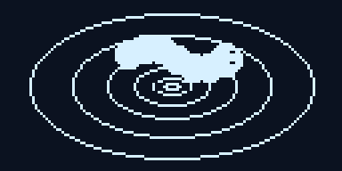
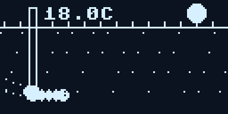
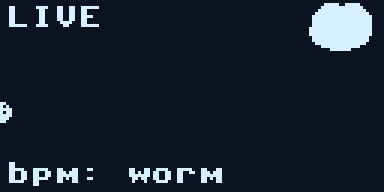
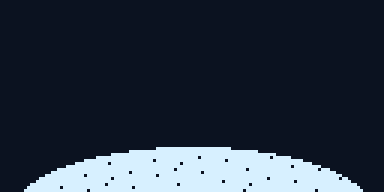
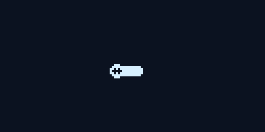
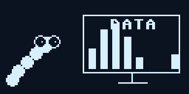
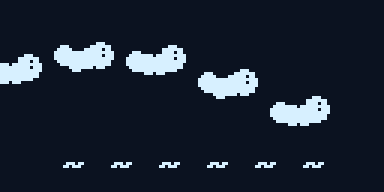
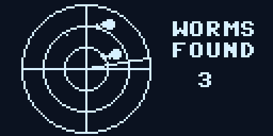

Ten little animations for the 128×64 screen on every bin. A board plays one of them
when it powers on, a different one each time, before the school card and the readings.
These are the real pixels: the same code that runs on the Pico was run on a desktop and
every frame captured, so what you see here is what the screen does, three times bigger.

Big Worm One fat worm crosses the screen, grinning, and the name comes up under it.

Worm Party Fifteen little worms wiggling at once. Some are thin, some are fat, none hold still.

Wormhole Rings rush outward like a tunnel and a worm shrinks into the middle. Then the name.

Underground A cross-section: sun, grass, two worms tunnelling and leaving tunnels behind, and a temperature probe stuck in the soil, warming up.

Worm Pulse A heartbeat trace drawn live, with a worm for the pen and a beating heart. bpm: worm.

Compost An apple core and a peel drop into the pile, and the worms come up for dinner. nom nom nom.

Hello Worm Zoom in on a worm face. It blinks. It says hi.

Worm Lab A worm in glasses watches a bar chart update on its own little screen. DATA!

Conga Six worms do the wave across the screen. Do the worm.

Worm Radar A radar sweep finds worms. Each blip wiggles when the beam passes. WORMS FOUND.
They live in lib/wormshow.py, each one a few dozen lines of circles,
lines and text. Make your own: copy one, give it a name and a draw(o, t),
add it to SHOWS. A board can run all of them in a loop as a demo
(tools/splash_demo.py), and tools/gen-splash.py
plus tools/splash-gif.py make these pictures.